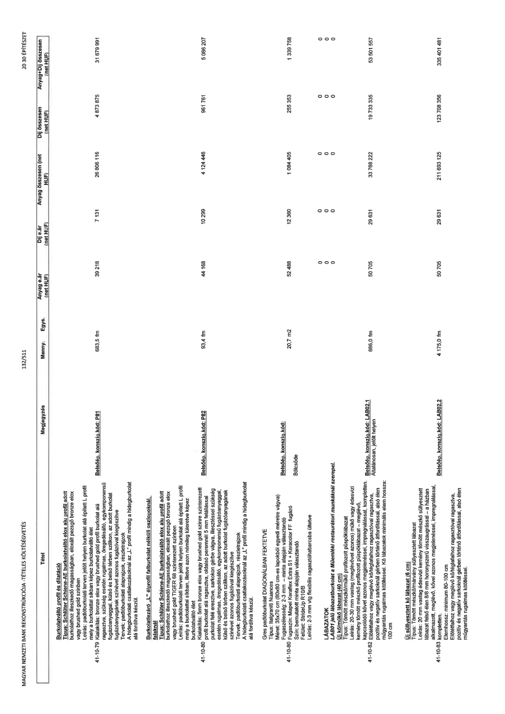

| Tétel | Megjegyzés | Menny. | Egys. | Anyag e.ár (net HUF) | Díj e.ár (net HUF) | Anyag összesen (net HUF) | Díj összesen (net HUF) | Anyag+Díj összesen (net HUF) |
|---|---|---|---|---|---|---|---|---|
| 41-10-79 Burkolatváltó profil és dilatáció Típus: Schlüter Schiene-AE burkolatváltó elox alu profil adott burkolathoz illeszkedő magasságban, eloxált pezsgő bronze elox vagy brushed gold színben Leírás: padlóburkolati terven jelölt helyen burkolat alá épített L profil mely a burkolatnál békéz képez burkolatváltó élet Kialakítás: bronze elox vagy brushed gold profil burkolat alá ragasztva, szükség esetén rugalmas, öregedésálló, egykomponensű fugázóanyaggal, külső és belső térben szilikon, az adott burkolat fugázóanyagának színével azonos fugázóval kiegészítve Tervek: padlóburkolati alaprajzok, részletrajzok A hidegburkolati csatlakozásoknál az „L” profil mindig a hidegburkolat alá fordítva készül. | Belsőép. konszig.kód: P01 | 683,5 | fm | 39 218 | 7 131 | 26 806 116 | 4 873 875 | 31 679 991 |
| 41-10-80 Burkolatlezáró „L” élprofil falburkolat nélküli oszlopoknál, falaknál Típus: Schlüter Schiene-AE burkolatváltó elox alu profil adott burkolathoz illeszkedő magasságban, eloxált pezsgő bronze elox vagy brushed gold TIGER 68 színterezett színben Leírás: padlóburkolati terven jelölt helyen burkolat alá épített L profil mely a burkolattal síkban, illetve azon némileg túleretve képez burkolatváltó élet Kialakítás: 5mm bronze elox vagy brushed gold színre színterezett profil burkolat alá ragasztva, oldalsó peremnél 5 mm felállással burkolat felé eresztve, sarkokon gérbe vágva, illesztéssel, szükség esetén rugalmas, öregedésálló, egykomponensű fugázóanyaggal, külső és belső térben szilikon, az adott burkolat fugázóanyagának színével azonos fugázóval kiegészítve Tervek: padlóburkolati alaprajzok, részletrajzok A hidegburkolati csatlakozásoknál az „L” profil mindig a hidegburkolat alá fordítva készül. | Belsőép. konszig.kód: P02 | 93,4 | fm | 44 158 | 10 299 | 4 124 446 | 961 761 | 5 086 207 |
| 41-10-81 Gres padlóburkolat DIAGONÁLBAN FEKTETVE Típus: Italgraniti Nuances Méret: 35x70 cm (60x60 cm-es lapokból egyedi méretre vágva) Fugaszélesség: 2-3 mm – minta alapján választandó Ragasztó: Mapei Keraflex Extra S1 + Keracolor FF fugázó Szín: bemutatott minta alapján választandó Felület: StrideUp R10/B Leírás: 2-3 mm vtg flexibilis ragasztóhabarcsba ültetve | Belsőép. konszig.kód: Bölcsőde | 20,7 | m2 | 52 486 | 12 360 | 1 084 405 | 255 353 | 1 339 758 |
| LÁBAZATOK | NaN | NaN | NaN | 0 | 0 | 0 | 0 | 0 |
| 41-10-82 LAB01 jelű lábazatburkolat a Műemléki restaurátori munkáknál szerepel, Új kő/műkő lábazat (40 cm) Típus: Tömör mészkő/műkő profilozott püspöklábazat Leírás: 20-30 mm vastag (meglévővel azonos) műkő vagy édesvízi kemény tömött mészkő profilozott püspöklábazat – meglévő, kapcsolódó kővel azonos megjelenéssel, impregnálással, kompletten. Előfalakhoz vagy meglévő kő/téglafalhoz ragasztóval ragasztva, pozitív és negatív sarkoknál gérben történő átfordítással, alsó élen műgyantás rugalmas kitöltéssel. Kő lábazatok minimális elem hossza: 100 cm | Belsőép. konszig.kód: LAB02.1 Általánosan, jelölt helyen | 666,0 | fm | 50 705 | 29 631 | 33 768 222 | 19 733 335 | 53 501 557 |
| 41-10-83 Új süllyesztett kő lábazat (6 cm) Típus: Tömör mészkő/márvány süllyesztett lábazat Leírás: 20 mm vastag édesvízi kemény tömött mészkő süllyesztett lábazat felső élén 8/8 mm horonyszerű visszaugrással – a házban alkalmazott, meglévő, kővel azonos megjelenéssel, impregnálással, kompletten. Elemhossz: minimum 80-100 cm Előfalakhoz vagy meglévő kő/téglafalhoz ragasztóval ragasztva, pozitív és negatív sarkoknál gérben történő átfordítással, alsó élen műgyantás rugalmas kitöltéssel. | Belsőép. konszig.kód: LAB02.2 | 4 175,0 | fm | 50 705 | 29 631 | 211 693 125 | 123 708 356 | 335 401 481 |
